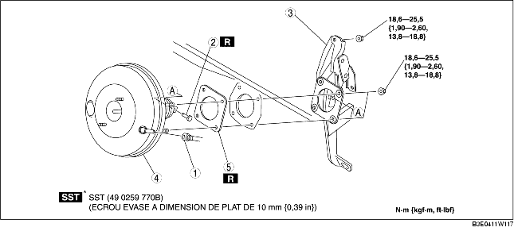

1. Effectuer la procédure suivante et déplacer le flexible de refroidisseur (LO) sur la position indiquée dans la figure. (ZJ, Z6)
2. Effectuer la procéduire suivante et déplacer le flexible du refroidisseur (LO) sous le véhicule. (LF)
3. Déposer le maître-cylindre. (voir la section DEPOSE/REPOSE DE MAITRE-CYLINDRE.)
4. Déposer le connecteur du contacteur de frein.
5. Déposer la pédale d'accélérateur. (voir la section DEPOSE/REPOSE DE PEDALE DE FREIN.)
6. Déposer les différents éléments selon l'ordre indiqué dans le tableau.
7. Pour la repose, suivre l'ordre inverse de la dépose.
8. Après la repose, inspecter la pédale de frein. (voir la section INSPECTION DE PEDALE DE FREIN.)
9. Ajuster le câble d'accélérateur. (voir la section INSPECTION/RÉGLAGE DE CÂBLE D'ACCÉLÉRATEUR [ZJ, Z6].) (voir la section INSPECTION/RÉGLAGE DE CÂBLE D'ACCÉLÉRATEUR [LF].)

.
|
1
|
Flexible à dépression
(voir la section DEPOSE/REPOSE DE LA FLEXIBLE A DEPRESSION.)
|
|
2
|
Axe d'articulation
(voir la section DEPOSE/REPOSE DE PEDALE DE FREIN.)
|
|
3
|
Composant de pédale de frein
(voir la section Note sur la dépose de composant de pédale de frein.)
|
|
4
|
Unité de frein mécanique
|
|
5
|
Joint
|
1. Déposer les écrous de montage de la pédale de frein.
2. Déplacer l'unité de pédale de frein vers l'arrière du véhicule.
3. Déposer le composant de pédale de frein.